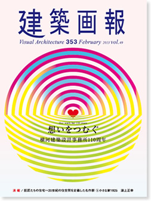

|

|
想いをつむぐ
横河建築設計事務所110周年
110周年を迎える横河建築設計事務所。病院や学校を中心とした近作を図面とともに紹介します。巻頭には鈴木博之氏による寄稿論文「横河民輔が生み出したもの」を掲載。。
Visual Architecture 353 Feb. 2013 Vol.49
建築画報353号
2013年2月20日発刊
本文114ページ
仕様 A4変形判
定価 3,300円（税込）
ISBN978-4-901772-70-
|
|
|
建築画報 Vol.353 目次
□002 Top Message 横河建築設計事務所 代表取締役社長 今田栄二
□004 ー論文ー 横河民輔の生み出したもの 鈴木博之
□011 横河建築設計事務所110年 略年表
癒しの環境 －医療・福祉施設－
■014 総合病院国保旭中央病院
■018 TOPIC 01 急性期病院の病棟計画
■020 静岡県立静岡がんセンター
■024 TOPIC 02 大規模病院における成長と変化の足跡
■026 済生会横浜市東部病院
■030 岩手県立磐井・南光病院
■034 TOPIC 03 日本赤十字病院との協働
■036 那須赤十字病院
■040 TOPIC 04 医療施設における環境配慮と災害対策
■042 日本赤十字社和歌山医療センター
■046 松江赤十字病院
■050 大森赤十字病院
■054 八戸赤十字病院
■055 福井赤十字病院
■056 京都第二赤十字病院
■057 日本赤十字社 近畿ブロック血液センター
■058 TOPIC 05 病院建築の再整備手法
■060 公益財団法人積善会 曽我病院
■062 TOPIC 06 よりよい精神医療をつくる
■064 智頭町保健医療福祉センター
■066 特定医療法人財団大西会 千曲中央病院
■066 福山市民病院
■066 つがる総合病院
■067 邑楽館林医療事務組合 館林厚生病院
■067 独立行政法人 国立がん研究センター中央病院（仮称）治療棟
■067 長野県立阿南病院
■068 新橋6丁目保健福祉施設 福祉プラザさくら川
■070 柏市総合保健医療福祉施設
■070 特別養護老人ホーム慈苑
■070 社会福祉法人 北海道ハピニス グリンハイム
■071 シオン銚子特別養護老人ホーム
■071 世田谷区立給田福祉園
■071 飛鳥晴山苑
育む環境 －教育施設－
■074 千葉工業大学 津田沼キャンパス 新1号棟・新2号棟・新学生ホール棟・4号館
■078 三鷹市立東台小学校
■080 町田市立小山中央小学校
■082 川越市立月越小学校
■084 町田市立小山ヶ丘小学校
■085 東京慈恵会医科大学 医学部看護学科校舎
■086 TOPIC 07 オープンスクールのきた道ゆく道
多様な環境 －商業・公共・生産・物流・海外－
■090 三越本店本館 地下階バリアフリー工事（免震レトロフィット）
■092 TOPIC 08 技術と設計の融合
■094 東京むさし農業協同組合 国分寺支店
■096 君津市生涯学習交流センター
■098 浄土ヶ浜ビジターセンター
■099 茨木市南市民体育館
■100 築上町役場 築城支所／保健センター
■101 大阪市鶴見斎場
■102 キョクレイ山下物流センター
■102 東ソー物流 冷蔵倉庫
■102 ロジスティクス・ネットワーク 杉戸物流センター
■102 ニチレイ仙台南 物流サービスセンター
■103 富士カプセル 北山工場
■103 フレゼニウス メディカル ケア ジャパン 豊前工場
■103 トーモク新横浜工場
■104 TOPIC 09 信頼される建物づくり
■106 抑留中死亡者慰霊碑
■106 カルロス・アントニオ・ロペス職業訓練センター
■106 国立プエルト・バリオス病院
■107 SVP小児医療大学院病院
■107 国立音楽アカデミー「マン・セスペ」校
■107 セネガル・日本職業訓練センター
■108 国立障害者リハビリテーションセンター（INR）
■108 ワクチン保管施設
■108 西部ウガンダ医療施設
■109 TOPIC 10 グローバル時代の建築設計
□110 建築概要
□115 Information
□116 巨匠たちの住宅～20世紀の住空間を定義した名作群
⑤小さな家1925 淵上正幸